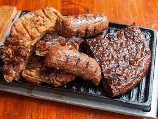

Preparacion Para un Asado Jugoso

Description
¡Hoy toca comer algo bien rico, abundante, tradicional y llenísimo de sabor!
Te vamos a acompañar paso a paso para que prepares esta receta original de lasaña casera de carne, con una salsa deliciosa para mojar el pancito hasta dejar totalmente limpio el plato. Perfecta para comer con amigos o en familia, como toda buena pasta, ¿o no?
Sin más preámbulo, pasemos a la parte divertida: ¡armar las capas de lasaña! Hoy vamos a preparar esta deliciosísima receta para 4 personas así que ¡a cocinar!
Ingredientes
- 2 kg carne (un poco de asado de tira, vacío, tapa de asado, entraña, colita de cuadril, matambre, falda parrillera o si tenés algún corte que te guste lo incluís)
- 4 morcillas bombón (si es de las grandes la fraccionás cuando servís)
- 4 chorizos de cerdo
- 2 Riñones
- 2 Kg de Chichulin
- Salchicha Parrillera
- 1 Pollo de Campo
- Sal Parrillera
- Limon Para EL Pollo
- Chimichurri
Pasos
- Encender el fuego mediante leña o carbón.
- Comenzaremos cocinando los filetes de ternera, en torno a 3 minutos por cada lado, sin que quede demasiado hecho.
- Después haremos las chuletas de cerdo y de cordero. En este caso se suelen cocinar un poco más, unos cuatro minutos, pero sin pasarse.
- Luego pondremos poco a poco las demás piezas, salchichas, morcilla, chorizo, alas de pollo, etc. En torno a 6-7 minutos de cocción por cada lado, será lo ideal..
- Es interesante espolvorear nuestro asado argentino con una porción generosa de sal gorda.
El tiempo de cocción total es de aproximadamente una hora y 20 minutos. Lo importante es que las piezas con hueso suelten toda la sangre y el resto tengan cierto color oscuro. También es una opción ideal, para disponer de guarnición para la carne, cocinar verduras con la misma técnica de este asado. Calabacín, berenjena, zanahoria en tiras, tomate en lonchas, espárragos trigueros, setas...son muchas las opciones y siempre serán una delicia.